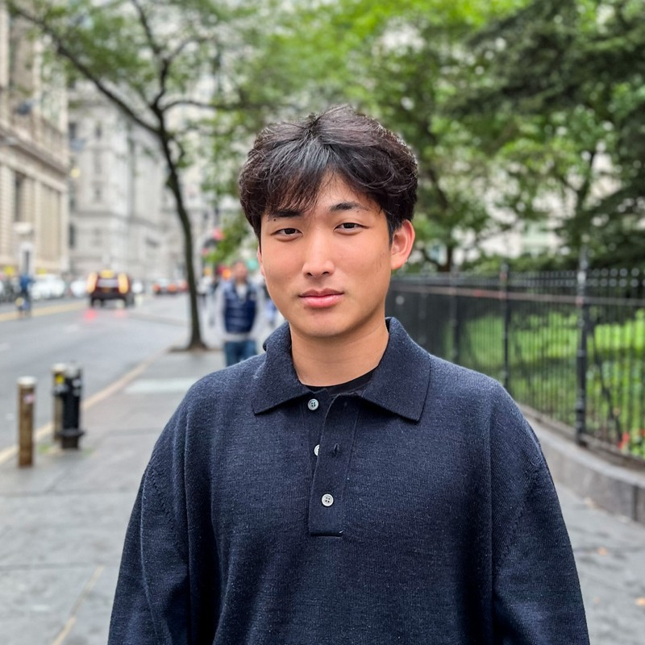

A False Discovery Rate Control Method Using a Fully Connected Hidden Markov Random Field for Neuroimaging Data
Taehyo Kim, Qiran Jia, Mony de Leon, Hai Shu
Medical Image Analysis, 104158.
Hello! I am a 5th year Biostatistics Ph.D. Candidate at New York University, supervised by
Dr. Hai Shu.
My research focuses on developing statistical machine learning methods for high-dimensional biomedical data,
spanning topics of representation learning, error control, interpretability, and medical imaging applications
such as FDG-PET, MRI, ultrasound, and 3D dental point clouds.
I recently worked as a Machine Learning Research Intern at Dandy.
Outside of research, I enjoy playing tennis and golf.

Taehyo Kim, Qiran Jia, Mony de Leon, Hai Shu
Medical Image Analysis, 104158.
Taehyo Kim, Hai Shu, Qiran Jia, Mony de Leon
AISTATS, 238:946-954. Runner-up winner of JSM Student Paper Competition.
Taehyo Kim, Amanda Eads, Brian McFee, Tara McAllister, Hai Shu
MICCAI, in press.
Yuyu (Ruby) Chen, Taehyo Kim, Hai Shu, Yang Feng
Statistics and Trustworthy AI for Cross Domain Acceleration, in press.
Tianze Tang, Yanbing Chen, Taehyo Kim, Hai Shu
BMC Medical Imaging, 25, 517.
Mahdi S. Hosseini, Babak Ehteshami Bejnordi, Vincent Quoc-Huy Trinh, Lyndon Chan, Danial Hasan, Xingwen Li, Stephen Yang, Taehyo Kim, et al.
Journal of Pathology Informatics, 15, 100357.
Amanda Eads, Taehyo Kim, Roberta Lazarus, Megan C. Leece, Elaine Hitchcock, Jonathan L. Preston, Brian McFee, Hai Shu, Tara McAllister
Minor revision at Journal of Speech, Language, and Hearing Research.
Taehyo Kim, Hai Shu
Submitted to TLMR.
Ben Li, Taehyo Kim, Hai Shu
Submitted to NeurIPS 2026.
Alden Yuanhong Lai, Taehyo Kim, Alex Dahlen, Tim Lomas
Round 1 review at Social Indicators Research.
Aleyah Goins, Holly Kim, Diovana de Melo Cardoso, Giseli Mitsuy Kayahara, Taehyo Kim, Hai Shu, Daniel Galera Bernabe*, Yi Ye*
Submitted to British Journal of Anesthesia.